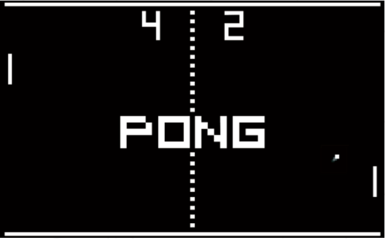

Transcendence
Bientôt, vous saurez que vous savez déjà des choses
que vous pensiez ne pas savoir
Resumé: Le C et le C++, c’est terminé !
Ce projet consiste à faire quelque chose qui vous est totalement inédit.
Rappelez-vous le début de votre voyage dans le merveilleux monde de l’informatique.
Regardez où vous en êtes à présent. Il est temps de briller!
Version: 12.1
Table des matieres
Chapitre I
Preambule

Chapitre II
Partie obligatoire
Ce project consiste à créer un site web pour participer à une compétition du célèbre
jeu Pong !
II.1 Vue d’ensemble
Grâce à votre site web, les utilisateurs pourront jouer à Pong entre eux. Vous fournirez
une interface utilisateur, un chat et des parties en ligne multijoueurs en temps réel !
Votre travail doit respecter les règles suivantes :
- Le backend de votre site doit être écrit en NestJS.
- Quant au frontend, il sera réalisé avec le framework TypeScript de votre choix.
- Vous êtes libre d’utiliser les bibliothèques que vous souhaitez dans ce contexte.
Toutefois, vous avez pour obligation de choisir la dernière version stable de
chaque bibliothèque ou framework utilisé.
- Vous devez utiliser une base de données PostgreSQL. Aucune autre base de données
n’est autorisée.
- Votre site web doit être une application web monopage. L’utilisateur doit pouvoir
utiliser les boutons Précédent et Suivant du navigateur.
- Votre site web doit être compatible avec la dernière version stable à jour de
Google Chrome, et un autre navigateur de votre choix.
- L’utilisateur ne doit pas rencontrer d’erreurs non gérées ou d’avertissement sur
votre site.
- Vous devez lancer le tout par un simple appel à: docker-compose up --build
II.2 Questions de sécurité
Afin de créer un site web pleinement fonctionnel, voici quelques questions de sécurité
que vous devez gérer:
- Tout mot de passe stocké dans votre base de données doit être chiffré.
- Votre site web doit être protégé contre les injections SQL
- Vous devez implémenter un système de validation côté serveur pour les formulaires
et toute requête utilisateur.
/!\Assurez-vous d’utiliser un algorithme de hachage de mot de passe fort
/!\Toutes les informations d’identification, clés API, variables env,
etc. doivent être enregistrées dans un fichier .env et ignoré par
git.
II.3 Compte utilisateur
- L’utilisateur doit pouvoir se loguer avec le système OAuth de l’intranet 42.
- L’utilisateur doit pouvoir choisir un nom d’utilisateur unique qui sera affiché sur
le site web.
- L’utilisateur doit pouvoir télécharger un avatar. S’il n’en met pas, un avatar par
défaut doit être affiché.
- L’utilisateur doit pouvoir activer l’authentification à deux facteurs, ou 2FA,
comme Google Authenticator ou l’envoi d’un SMS sur son téléphone portable.
- L’utilisateur doit pouvoir ajouter d’autres utilisateurs comme ami(e)s et voir leur
statut en temps réel (en ligne, hors-ligne, en pleine partie, etc.).
- Des stats (telles que : victoires et défaites, rang et niveaux, hauts faits, etc.) doivent
être affichées sur le profil de l’utilisateur.
- Chaque utilisateur doit avoir un Match History (historique comportant les par-
ties 1 contre 1, les niveaux et ainsi de suite). Toute personne loguée doit pouvoir
le consulter.
II.4 Chat
Vous devez également créer un chat pour vos utilisateurs:
- L’utilisateur doit pouvoir créer des channels (salons de discussion) pouvant être
soit publics, privés, ou protégés par mot de passe.
- L’utilisateur doit pouvoir envoyer des direct messages à d’autres utilisateurs.
- L’utilisateur doit pouvoir en bloquer d’autres. Ainsi, il ne verra plus les messages
envoyés par les comptes qu’il aura bloqués.
- L’utilisateur qui crée un nouveau channel devient automatiquement son owner
(propriétaire). Ceci, jusqu’à ce qu’il le quitte.
- Le propriétaire du channel peut définir un mot de passe requis pour accéder
au channel, le modifier, et le retirer.
- Le propriétaire du channel en est aussi un administrateur. Il peut donner le
rôle d’administrateur à d’autres utilisateurs.
- Un utilisateur qui est administrateur d’un channel peut expulser, bannir ou
mettre en sourdine (pour un temps limité) d’autres utilisateurs, mais pas les
propriétaires du channel.
- Grâce à l’interface de chat, l’utilisateur doit pouvoir en inviter d’autres à faire
une partie de Pong.
- Grâce à l’interface de chat, l’utilisateur doit pouvoir accéder aux profils d’autres
joueurs.
II.5 Le jeu
Le principal objectif de ce site web est de jouer à Pong avec d’autres joueurs !
- Par conséquent, l’utilisateur doit pouvoir lancer une partie de Pong en live contre
un autre joueur, directement sur votre site web.
- Il doit y avoir un système de matching : l’utilisateur rejoint une file d’attente
jusqu’à être matché automatiquement avec quelqu’un d’autre.
- Votre jeu peut être un jeu canvas, être rendu en 3D, ou même n’être pas très beau
à voir, etc. ..., mais dans tous les cas, il doit être fidèle au Pong original de 1972.
- Vous devez offrir quelques options de customisation (par exemple, des power-ups
ou des maps différentes) mais l’utilisateur doit pouvoir jouer à la version par défaut
sans options s’il le souhaite.
- Le jeu doit être responsive!
Ayez en tête les soucis de réseau comme les déconnexions inattendues
ou des latences. Vous devez vous efforcer d’offrir la meilleure
expérience utilisateur possible.
Chapitre III
Rendu et peer-evaluation
Rendez votre travail sur votre dépot Git comme d’habitude. Seul le travail présent
sur votre dépot sera évalué en soutenance. Vérifiez bien les noms de vos dossiers et de
vos fichiers afin que ces derniers soient conformes aux demandes du sujet.
Site web
Ressources